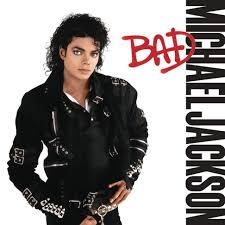

CANCIONERO |
|
Michael Jackson Your butt is mine, gonna tell you rightJust show your face in broad daylight I'm tellin' you on how I feel Gonna hurt your mind, don't shoot to kill Sha'mon, ah, sha'mon Lay it on me, alright I'm givin' you on count of three Just show your stuff or let it be I'm tellin' you just to watch your mouth I know your game, what you're about Well, they say the sky's the limit And to me, that's really true But my friend, you have seen nothing Just wait till I get through Because I'm bad (bad), I'm bad (bad) Sha'mon (really, really bad) You know I'm bad (bad), I'm bad (bad) You know it (really, really bad) You know I'm bad (bad), I'm bad (bad) Sha'mon (really, really bad), you know And the whole world has to answer right now Just to tell you once again Who's bad? The word is out, you're doin' wrong Gonna lock you up before too long Your lyin' eyes gonna tell you right So listen up, don't make a fight Your talk is cheap, you're not a man You're throwin' stones to hide your hands Well, they say the sky's the limit And to me, that's really true But my friend, you have seen nothing Just wait till I get through Because I'm bad (bad), I'm bad (bad) Sha'mon (really, really bad) You know I'm bad (bad), I'm bad (bad) You know it (really, really bad) You know I'm bad (bad), I'm bad (bad) You know it (really, really bad), you know And the whole world has to answer right now Just to tell you once again Who's bad? We can change the world tomorrow This could be a better place If you don't like what I'm sayin' Then won't you slap my face? Because I'm bad (bad), I'm bad (bad) Sha'mon (really, really bad) You know I'm bad (bad), I'm bad (bad) You know it (really, really bad) You know I'm bad (bad), I'm bad You know it (really, really bad), you know And the whole world has to answer right now Just to tell you once again You know I'm bad (bad), I'm bad (bad) Sha'mon (really, really bad) You know I'm bad (bad), I'm bad (bad) You know it (really, really bad) You know it, you know, you know You know, come on (really, really bad) And the whole world has to answer right now Just to tell you once again You know I'm smooth (bad), I'm bad (bad) You know it (really, really bad) You know I'm bad (bad, bad) I'm bad (really, really bad) You know it, you know, you know You know, come on (really, really bad) And the whole world has to answer right now Just to tell you once again You know I'm bad (bad), I'm bad (bad) You know it (really, really bad) You know I'm bad (bad) You know it (really, really bad) You know I'm bad (bad), I'm bad (bad) You know it (really, really bad) You know (really, really bad) And the whole world has to answer right now Just to tell you once again Who's bad?
| |
|
|